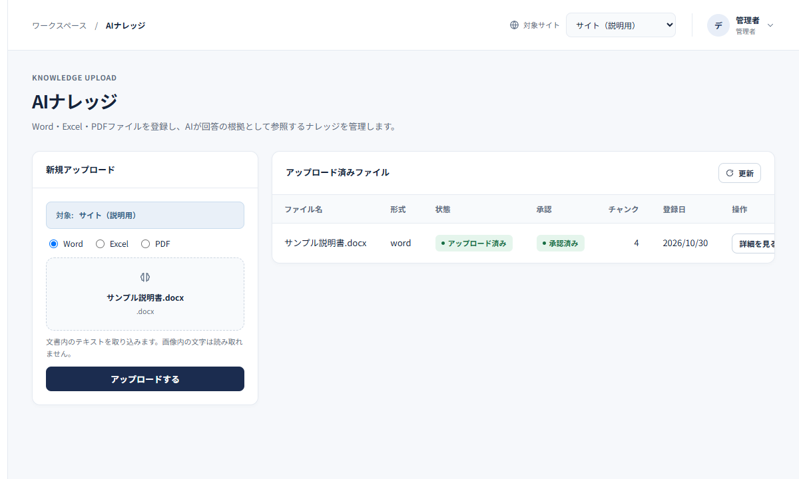
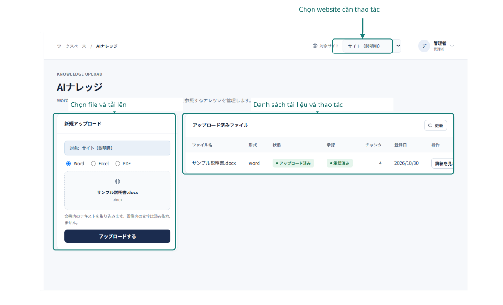
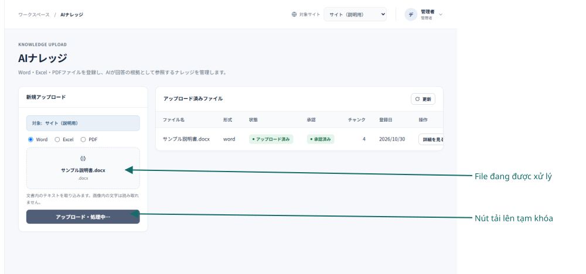
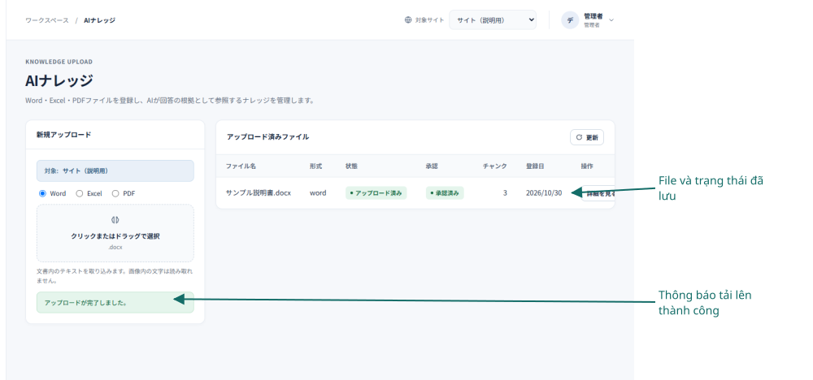

Chuẩn bị tài liệu
Dùng Word .docx, Excel .xlsx/.xls hoặc PDF có chữ đọc được. Chuẩn bị nội dung rõ ràng, thống nhất; tránh đặt các thông tin đã hết hiệu lực cạnh thông tin đang áp dụng.

Chọn tài liệu
Chọn website → Word / Excel / PDF → chọn file → アップロードする.

Đang xử lý
アップロードする → アップロード・処理中… → đọc văn bản → chia đoạn → tạo vector → lưu database.

Đây là bước chuẩn bị tài liệu để tìm kiếm; chưa sinh câu trả lời cho khách.
Kết quả và trạng thái duyệt
Hiện アップロードが完了しました。 → bỏ file đang chọn → cập nhật danh sách bên phải.

Admin tải → đã duyệt. Staff tải → chờ duyệt. Nếu xử lý lỗi → hiện lỗi, giữ file để tải lại.
Nếu báo lỗi hoặc đang bận
Đọc thông báo → chờ rồi thử lại. Nếu mất mạng sau khi gửi, bấm 更新 và kiểm tra danh sách trước khi tải lại vì tài liệu có thể đã được lưu.
Tiếp theo: Xem, duyệt và xóa tài liệu.